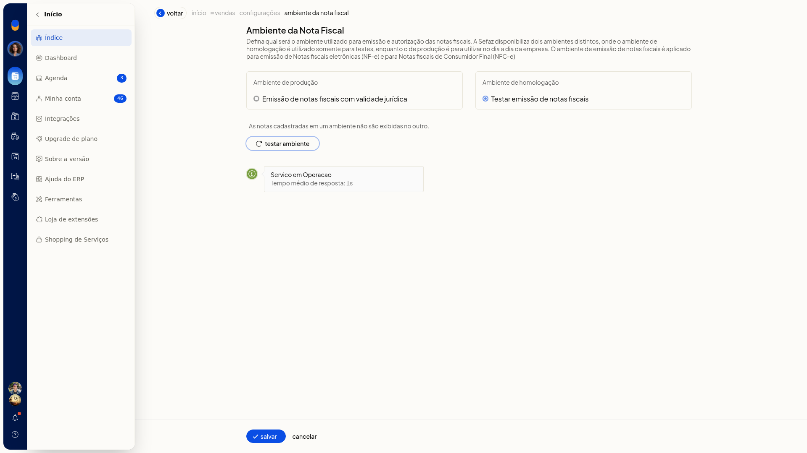

Testar o ambiente das notas fiscais
Importante
- O ambiente de homologação serve somente para testes.
- O ambiente de produção é para o dia a dia e descreve emissão de notas fiscais com validade jurídica.
- As notas cadastradas em um ambiente não são exibidas no outro.
- Marcar um ambiente não grava a escolha. Para gravar, clique em Salvar. Sair da tela sem Salvar descarta a seleção.
Instruções
-
Acesse Configurações > Configurações ERP.
-
Abra a aba Notas Fiscais.
-
Clique em Ambiente das notas fiscais. O item exibe o selo do ambiente já gravado.

-
Selecione Ambiente de produção (Emissão de notas fiscais com validade jurídica) ou Ambiente de homologação (Testar emissão de notas fiscais).


-
Clique em Testar ambiente. A tela mostra o carregamento e, em seguida, o status do serviço e o tempo médio de resposta.
